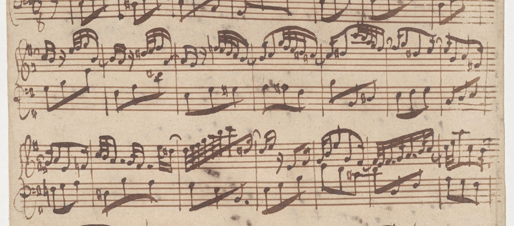

La chiave di basso, i tagli addizionali, il doppio pentagramma con il do centrale e l’endecalineo: le due chiavi lette come un rigo unico.
Il doppio pentagramma è formato da due pentagrammi uniti tra loro da una parentesi graffa e da una linea verticale che li congiunge.
Andrea Cappellari, Teoria, Analisi e Percezione Musicale, vol. 1, p. 11
C1Leggiamo sul doppio pentagramma, pp. 218–223
Sezione C, unità 1, lezioni 1 e 2 «Tra linee e spazi» e «Oltre il pentagramma»: il doppio pentagramma con il do centrale e i tagli addizionali.
La chiave di basso (o chiave di fa) è una F stilizzata: i suoi due punti racchiudono la quarta linea, che è il fa «che sta immediatamente sotto al Do centrale del pianoforte». D. Zanettovich, Elementi fondamentali di teoria e di ortografia musicale, p. 14
sol · si · re · fa · la
la · do · mi · sol
(con il fa sotto il rigo e il si sopra)
Il metodo è quello della lezione 1: un riferimento, due serie di terze, la lettura per distanze. Cambiano soltanto il riferimento e i nomi delle serie.
Leggere la chiave di basso con i nomi della chiave di violino. Sulla stessa posizione il nome in chiave di basso sta due gradi sopra quello in chiave di violino: la prima linea è sol e non mi, la quarta è fa e non re. Chi legge «traducendo» dalla chiave di violino sbaglia sempre di una terza; il rimedio è ripartire dal fa della quarta linea.
Seguire la voce più grave del corale, quella che nelle edizioni moderne si scrive in chiave di basso: si muove più spesso per salto delle voci superiori, e a ogni fine di frase si ferma insieme a esse.
Le note più acute o più gravi di quelle che il rigo contiene si scrivono su brevi tratti di linea che «si scrivono soltanto in corrispondenza delle singole note per le quali sono necessari: sono detti tagli addizionali». I tagli «debbono rispettare, tra loro e nei confronti del pentagramma, la stessa spaziatura presentata dal rigo». D. Zanettovich, Elementi fondamentali, pp. 20–21
Ogni taglio è una linea in più della serie delle linee; fra un taglio e l’altro c’è uno spazio. In chiave di violino, sotto il rigo: re (spazio), do (primo taglio), si (spazio), la (secondo taglio). Sopra il rigo: sol (spazio), la (primo taglio), si, do (secondo taglio). Le serie della lezione 1 continuano oltre il rigo.
Confondere la nota sul taglio con quella appesa al taglio: il si sotto il primo taglio (b. 2) e il la attraversato dal secondo. Si contano i tagli dal rigo verso l’esterno e si stabilisce, per l’ultima posizione, se è linea o spazio.
Uno o due tagli si leggono a colpo d’occhio; da tre in su occorre contarli. Per le note ancora più lontane si usano altri rimedi: il secondo rigo con l’altra chiave (slide seguenti) e i segni d’ottava (unità 3, lezione 2).
L’insieme dei righi che si leggono nello stesso momento. Il doppio pentagramma del pianoforte, dell’arpa e dell’organo unisce un rigo in chiave di violino e uno in chiave di basso.
La graffa a sinistra riunisce i righi di uno stesso strumento. La stanghetta che attraversa tutti i righi indica che le battute coincidono: la battuta 5 del rigo superiore e la battuta 5 di quello inferiore suonano insieme.
Si legge per colonne, battuta per battuta: ciò che sta in verticale suona insieme. Le bb. 1–4 si fermano sul re e sul sol (una sospensione), le bb. 5–8 ripetono l’inizio e arrivano al do in entrambi i righi: le due metà si rispondono, come si vedrà nello studio della frase (unità 7).

Leggere il rigo superiore fino alla fine della riga e poi tornare indietro a quello inferiore, come in un testo. Il sistema si legge in verticale e in avanti insieme: si scende, si risale, si passa alla battuta successiva.
Lo stesso doppio pentagramma ospita anche le quattro voci di un coro, due per rigo: è il formato della scrittura a quattro parti dell’unità 5 e dei corali dell’unità 10.
«Il DO posto al centro della tastiera del pianoforte, chiamato DO centrale, è usato dai pianisti come punto di riferimento per orientarsi.» Il linguaggio della musica, volume del biennio, p. 218
Le due chiavi si definiscono proprio a partire da questa nota: la chiave di violino indica «il Sol immediatamente sovrastante il Do centrale», la chiave di basso il fa che sta immediatamente sotto (Zanettovich, pp. 14–15). Il do centrale sta sul primo taglio sotto il rigo di violino e sul primo taglio sopra il rigo di basso.
Intorno al do centrale i due righi si sovrappongono: la, si, do, re, mi si possono scrivere in tutti e due, con i tagli nell’uno o nell’altro. Nell’esempio la stessa linea è scritta nei due righi: suona all’unisono.
Riscrivere una nota nell’altra chiave nella stessa posizione grafica invece che alla stessa altezza: il la sul secondo taglio sotto il rigo di violino, ricopiato sul secondo taglio sotto il rigo di basso, diventa un do₂, più di un’ottava e mezza sotto. Le due chiavi non sono due alfabeti per le stesse posizioni: sono due finestre su altezze diverse, che si toccano nel do centrale.
Chi scrive sceglie il rigo in cui la nota richiede meno tagli; nel pianoforte, la mano che la suona.
Il rigo di violino e quello di basso, con fra loro la linea del do centrale, formano «un solo insieme di linee e spazi. Questo nuovo insieme di linee è chiamato endecalineo (endeca = undici)»: cinque linee, più cinque, più quella di mezzo. La linea di mezzo non si traccia per intero: si scrive «solo un piccolo frammento di linea quando esso sia necessario a scrivere la nota» do, lasciando altrimenti vuoto lo spazio fra i righi. E. Pozzoli, P. G. Zauli, Il nuovo Pozzoli. Teoria musicale, vol. 1, p. 20
In una lettura in endecalineo la melodia passa da un rigo all’altro: le note dal do centrale in su stanno sul rigo di violino, quelle sotto sul rigo di basso. Chi legge cambia riferimento senza fermarsi — sol della seconda linea sopra, fa della quarta linea sotto — e nel passaggio usa le note comuni intorno al do centrale.
Nei libri di solfeggio il rigo che tace resta vuoto; qui porta pause, necessarie all’esecuzione del rigo, che non si leggono. I nomi dell’esempio: sol mi fa re · mi do si la · sol la si sol · fa la · si do re mi · fa re mi do · re fa mi re · do.
L’occhio abbraccia cinque linee con uno sguardo; undici linee di seguito andrebbero contate. Due gruppi di cinque, ciascuno con il suo riferimento, e la linea di mezzo scritta solo quando serve, si leggono più in fretta: la linea del do compare come segnale e non come sfondo.
Continuare a leggere con la chiave di prima dopo il cambio di rigo: sulla quarta linea del rigo di basso si dice «re» (il nome della quarta linea in chiave di violino) invece di «fa». Prima di leggere si individuano i punti in cui la linea cambia rigo; nella lettura, a ogni cambio si pensa il nuovo riferimento.
Il parlato in endecalineo è la prima prova delle interrogazioni di solfeggio della classe prima: quattro battute a prima vista, con uno o più passaggi da un rigo all’altro. Si esercita nella lezione 3.
Sul pianoforte i do sono otto. Per indicare per iscritto, senza il rigo, quale di essi si intende, al nome si aggiunge il numero dell’ottava; il numero cambia sul do, e la nota subito sotto il do₄ è il si₃.
La numerazione internazionale: il do centrale è do₄, il sol della seconda linea in chiave di violino è sol₄, il fa della quarta linea in chiave di basso è fa₃. Il la sopra il do centrale, la₄, è la nota del diapason con cui si accordano gli strumenti.
Nella tradizione didattica italiana lo stesso do si chiama Do3: Pozzoli scrive che la chiave di violino «ha come punto di riferimento Sol3» e la chiave di basso Fa2 (Teoria musicale, vol. 1, p. 18). Le due numerazioni differiscono di uno: quando si cita un numero d’ottava si dichiara la convenzione.
Leggendo o cantando il numero non si pronuncia: sul rigo il registro si vede. Serve per scrivere di musica senza mostrarla.
Ricopiare le otto battute in chiave di basso, alla stessa altezza. Sotto ogni nota scrivere il nome. Poi indicare quante note, nella versione in chiave di basso, richiedono un taglio addizionale.
Chi termina prima riscrive le stesse otto battute in endecalineo: dal do in su sul rigo di violino, il resto sul rigo di basso.
Chiave di basso: il fa della quarta linea; linee sol–si–re–fa–la, spazi la–do–mi–sol.
Taglio addizionale: breve linea per una sola nota, alla stessa distanza delle linee del rigo.
Sistema: i righi che si leggono insieme, uniti da graffa e stanghetta.
Do centrale (do₄): primo taglio sotto in chiave di violino, primo taglio sopra in chiave di basso.
Endecalineo: i due righi e la linea del do letti come un rigo di undici linee.
Le due chiavi non sono due alfabeti: sono due finestre sulla stessa successione di suoni, che si toccano nel do centrale. Nel passaggio da un rigo all’altro cambia il riferimento, non il metodo.
La lezione si chiude con il solfeggio parlato (slide «In classe · parlato», in fondo). La lezione 3 è dedicata alla lettura parlata a tempo in chiave di violino, in chiave di basso e in endecalineo.
Cinque affermazioni sulla chiave di basso, sui tagli, sul do centrale e sull’endecalineo.
Compiti per la prossima volta
Ricopia le otto battute in chiave di basso, alla stessa altezza. Sotto ogni nota scrivi il nome.
Poi conta quante note richiedono un taglio in chiave di violino e quante in chiave di basso. Prima di cominciare individua il do centrale: è il punto in cui le due scritture si toccano.
Sul quaderno, a matita. La foto del lavoro finito va su Classroom. Nel Workbook è l’esercizio C1-U2-L2-06.
Compiti per la prossima volta
n. 67 e n. 68 parlato · n. 69 e n. 70 cantato · n. 71 e n. 72 ritmico
Ogni pezzo a tempo, senza fermarti: il parlato a nomi, il cantato prendendo il primo suono dalla tastiera, il ritmico battendo la pulsazione.
Scrivi il ritmo sul quaderno: otto battute in 2/4. Ascolta tutto due volte, poi ogni coppia di battute due volte, poi il collegamento 1–4, 3–6 e 5–8, e tutto per controllare.
Il dettato · otto battute
Le sezioni (riferimento, tutto, le coppie, il collegamento) si ascoltano una per una e si ripetono quanto serve; le fasi fanno la procedura della classe, con gli annunci e le pause, da qualunque punto.
Sul quaderno scrivi in testa la sigla C1-D-U02-L2. Si corregge all’inizio della prossima lezione.
Compiti per la prossima volta
Continua la melodia fino a otto battute, in chiave di violino, metro 3/4, solo note naturali (senza diesis né bemolle): le prime due sono date. Muoviti soprattutto per grado congiunto, e dopo un salto di quarta o più torna indietro per grado; chiudi sul do, arrivandoci per grado. Ogni battuta piena, l’ultima con una nota sola. Poi cantala o suonala.
Sul quaderno, con la sigla C1-ME-U02-L2 in testa; la foto va su Classroom.
Scritto: Dal violino al basso, alla stessa altezza (Workbook, esercizio C1-U2-L2-06), sul quaderno; la foto va su Classroom. Solfeggio dal quaderno di lettura: parlato n. 67, 68; cantato n. 69, 70; ritmico n. 71, 72 (a tempo, senza fermarsi). Dettato C1-D-U02-L2 dalla pagina della lezione (sezioni da ascoltare, o le fasi della procedura guidata), sul quaderno con la sigla. Melodia da continuare fino a otto battute (C1-ME-U02-L2).
In classe
A nomi, a tempo, con la mano che batte. Chi si ferma riparte dalla battuta dopo.
Apri il n. 64 nel quaderno di lettura ↗ chiave di basso · 4/4
In classe
Si prende il tono dalla tastiera, si canta insieme; poi a gruppi.
Apri il n. 65 nel quaderno di lettura ↗ chiave di violino · 4/4
In classe
Tutti insieme, battendo la pulsazione. Poi a file, due battute a testa.